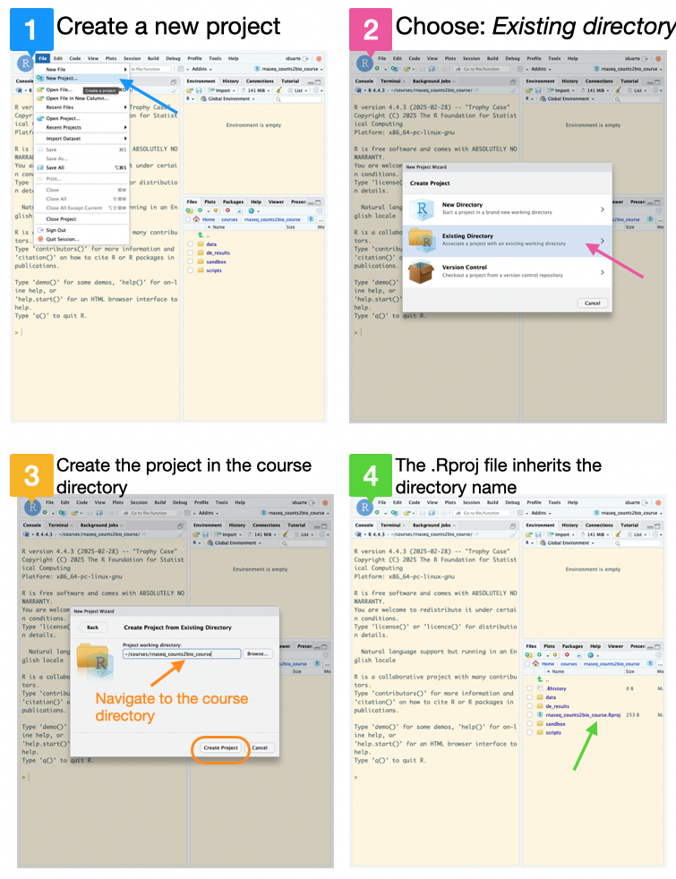
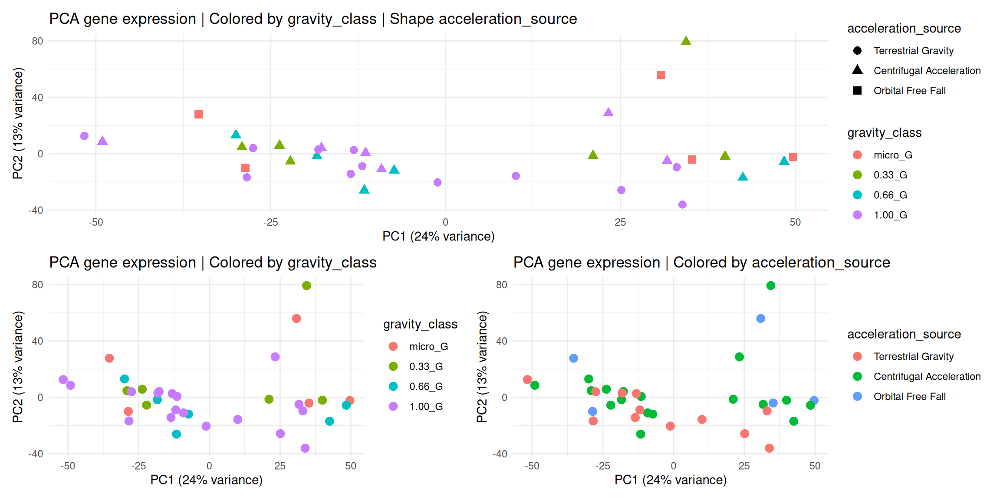
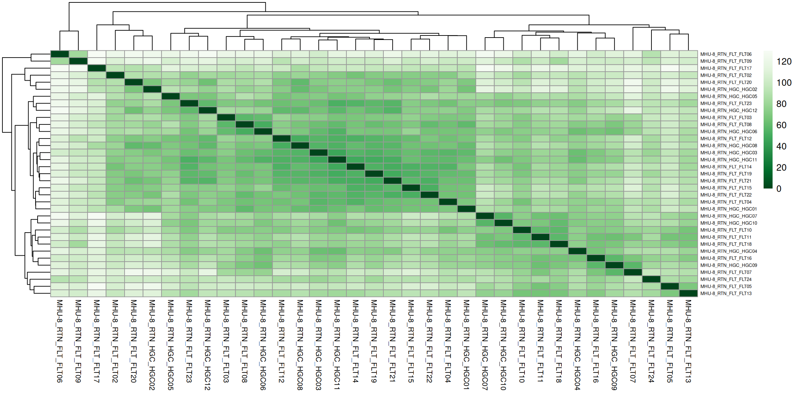
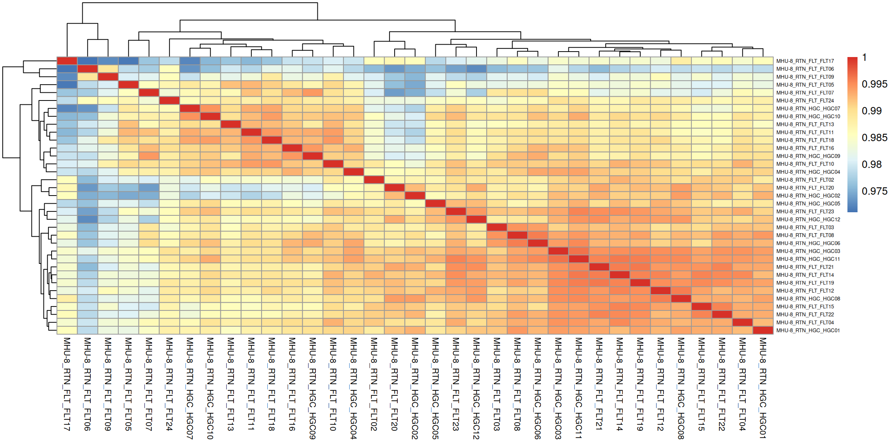
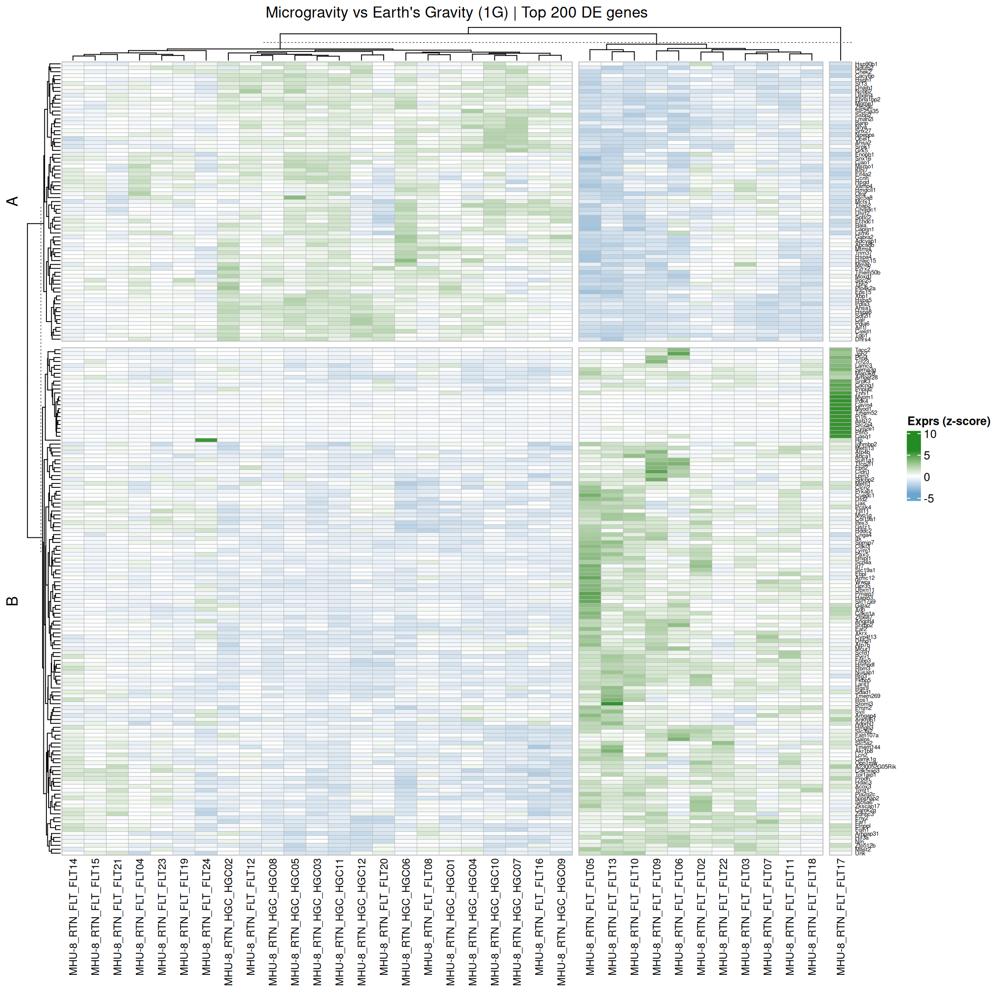
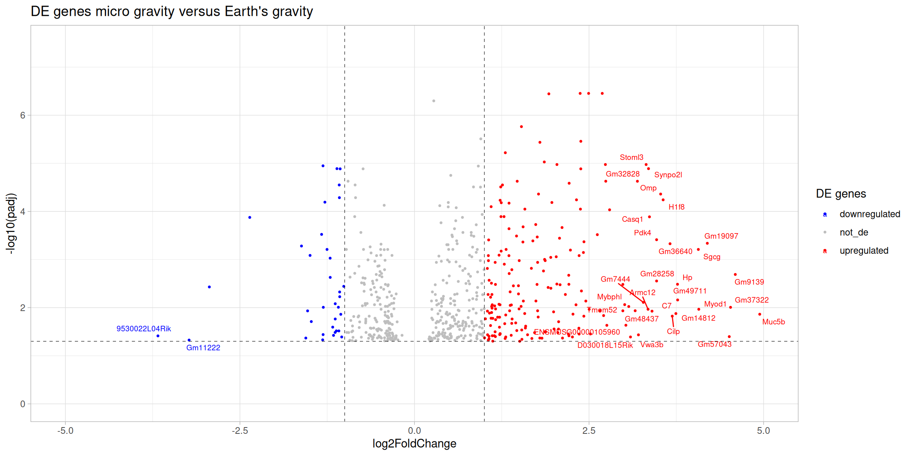

Welcome! This crash course walks you through RNA-seq data analysis in R: From raw count matrices to functional interpretation of differentially expressed genes.
Learning Objectives
Perform quality control of the count data.
Identify the R commands needed to run a differential expression analysis using DESeq2.
Visualize the DE results.
Perform functional enrichment of the DE genes.
Visualize functionally enriched categories.
References
Attribution | These course materials are freely adapted from a combination between the following resources:
RNA-seq is a leading method for quantifying RNA levels in biological samples, leveraging next-generation sequencing (NGS) technologies. The process begins with RNA extraction and conversion to cDNA, followed by sequencing to produce reads representing the RNA present in a sample.
RNA-seq data (i.e. reads) are processed through a standard workflow with three main stages:
Data pre-processing – improves read quality by removing contaminants and adapters.
Alignment and quantification – maps reads to a reference genome and estimates gene expression, either through traditional or faster lightweight methods.
Differential expression analysis – identifies and visualizes genes with significant expression differences.
Additional downstream analyses (e.g., functional enrichment, co-expression, or multi-omics integration) are popular ways to derive biological insights from these analyses.
Note | As shown in the above scheme, this course will not cover the first two steps. It will begin with a gene count matrix and proceed with differential expression analysis, visualization, and a brief overview of functional enrichment.
Differential expression (DE) analysis compares gene expression levels across conditions (e.g., disease vs. healthy) to identify genes with statistically significant changes. This is typically done using tools like DESeq2, a robust R package designed for analyzing RNA-seq count data.
Input Requirements:
A count matrix (genes × samples).
A metadata table describing sample attributes.
Quality Control:
Use PCA and hierarchical clustering to explore variation and detect outliers.
Transform counts using variance stabilizing transformation (vst) or regularized log (rlog) to ensure comparable variance across genes, improving downstream analysis.
Filtering:
Remove genes with low or zero counts to improve sensitivity and reduce false positives.
Design Formula:
Specifies how gene counts depend on experimental factors.
Can include main conditions and covariates (e.g., gender, batch, stage).
The main factor of interest is usually placed last for clarity.
DE with DESeq2
DESeq2 is a widely used R package for identifying differentially expressed (DE) genes from RNA-seq count data. RNA-seq data typically exhibit many low-count genes and a long-tailed distribution due to highly expressed genes, requiring specialized statistical modeling. The major steps in DESeq2 are the following:
Normalization
Adjusts for sequencing depth and RNA composition using size factors calculated via the median ratio method.
Normalized counts are used for visualization but raw counts must be used for DESeq2 modeling.
Dispersion Estimation
RNA-seq data show overdispersion (variance > mean).
DESeq2 models count data using the negative binomial distribution.
Dispersion is estimated:
Globally (common dispersion),
Per gene (gene-wise dispersion),
Then refined through shrinkage toward a fitted mean-dispersion curve to improve stability, especially with small sample sizes.
Genes with extreme variability are not shrunk to avoid false positives.
Model Fitting and Hypothesis Testing
A generalized linear model (GLM) is fit to each gene’s normalized counts.
DESeq2 tests whether gene expression differs significantly between groups:
Wald test for simple comparisons (e.g., treated vs. control),
Likelihood Ratio Test (LRT) for more complex designs with multiple variables.
Each test returns a log2 fold change and a p-value.
Multiple Testing Correction
To control for false positives from testing thousands of genes, DESeq2 adjusts p-values using Benjamini-Hochberg FDR correction.
An FDR cutoff of <0.05 means that 5% of DE genes may be false positives.
After identifying differentially expressed (DE) genes, functional analysis helps interpret their biological relevance by uncovering the pathways, processes, or interactions they may be involved in. This includes:
Network analysis – groups genes with similar expression patterns to reveal potential interactions.
This course focuses on Over-Representation Analysis (ORA), a common enrichment method that uses the hypergeometric test to assess whether certain biological pathways or gene sets are statistically enriched in the DE gene list.
Key components of ORA:
Universe – the full set of genes considered (e.g., all genes in the genome).
Gene Set – a group of genes annotated to a particular function or pathway (e.g., from Gene Ontology).
Gene List – the list of DE genes identified in the analysis.
The test evaluates whether the overlap between the DE gene list and a gene set exceeds what would be expected by chance, pointing to potentially meaningful biological mechanisms.
Tools commonly used for functional enrichment include Gene Ontology, KEGG, Reactome, clusterProfiler, and g:Profiler. These support the biological interpretation of DE results and help uncover pathways affected by the experimental condition.
Differential Expression Analysis with DESeq2
In this tutorial, we will guide you through the practical steps necessary to set up the RStudio project, load the required packages and data, execute the DESeq2 analysis, and derive biological insights from the DE results.
Before collecting data, define a clear folder structure and file naming convention. This improves organization, avoids confusion, and supports collaboration. A consistent setup helps you and your team quickly locate and understand files.
Start organized - your future self (and collaborators) will thank you!
Suggested minimal structure for a data analysis project:
project_name_no_spaces_no_special_chars/
├── data/ # Raw and processed data
│ ├── processed/
│ └── raw/
├── output/ # Figures, tables
├── results/ # Analysis results, with appropriate sub-folders
├── scripts/ # Analysis and processing code
└── sandbox/ # Exploratory work (not for sharing)
Create a new RStudio project inside the rnaseq_counts2bio_course folder:
2.1 Go to the File menu and select New Project;
2.2 Select Existing Directory;
2.3 Navigate to the course directory rnaseq_counts2bio_course and click on Create Project;
2.4 The new project will be automatically opened in RStudio, and inherits the directory name.

We can check whether we are in the correct working directory with getwd().
Next, go to the File menu, select New File and then R Markdown to create a notebook style script file, using literate programming, in which we will save all the R code required for this analysis.
3.1 In the Title write: Differential expression analysis with DESeq2, choose HTML as Default Output Format, and insert the author name.
3.2 Save the file as de_analysis.Rmd inside the scripts folder.
3.3 Delete the example markdown code, except the YAML header (the first lines between ---), and the setup code chunk.
From now on, each command described in the course will be added to this script.
Our case study
Artificial Gravity Attenuates the Transcriptomic Response to Spaceflight in the Optic Nerve and Retina
Prolonged exposure to microgravity in space poses risks to eye health. To explore a potential countermeasure, researchers exposed mice on the International Space Station to varying levels of artificial gravity (0, 0.33, 0.67, and 1G) using centrifugation. After returning the mice to Earth, RNA-seq of their optic nerve and retina revealed that microgravity triggers gene expression changes. Adding artificial gravity on board the ISS can attenuate the transcriptomic response to microgravity in a dose-dependent manner. Such attenuation may effectively mitigate spaceflight-induced detrimental effects on ocular tissue.
If you are a Windows user, please install first RTools which match your exact R version.
Code
# # Install the required packages if not already installed# install.packages(c("pak"))# # pak::pkg_install(c("BiocManager", "remotes", "here", "tidyverse", # "DESeq2", "pheatmap", "RColorBrewer", "ggrepel", "clusterProfiler",# "enrichplot", "org.Mm.eg.db", "patchwork", "ComplexHeatmap"# ))# # # Install the course data package# pak::pak("patterninstitute/OSD758")# Load packageslibrary("here") # package to find your current working directorylibrary("tidyverse") # packages for data manipulation and visualizationlibrary("DESeq2") # differential expression analysislibrary("pheatmap") # heatmapslibrary("RColorBrewer") # color paletteslibrary("ggrepel") # repel overlapping text labels in ggplot2 plotslibrary("clusterProfiler") # for enrichment analysislibrary("enrichplot") # to draw functional enrichment resultslibrary("org.Mm.eg.db") # mouse gene annotation databaselibrary("patchwork") # combining multiple plotslibrary("ComplexHeatmap") # to draw heatmaps# Install and load package containing the datalibrary(OSD758)# Gene expression in Countsraw_counts <- OSD758::gene_expression(format ="wide", only_expressed_genes =TRUE) # View(raw_counts)# Samples metadatasamples <- OSD758::samples()# View(samples)
The first step in any data analysis pipeline is quality control (QC) to check for data issues, and ensure the data is suitable for downstream analyses.
2.1 Variance stabilization data transformation
For QC analysis, it is useful to work with transformed versions of the count data, variance-stabilised (vst) or regularised log-transformed (rlog) counts. While, the rlog is more robust to outliers and extreme values, vst is computationally faster and so preferred for larger datasets.
Info: The rlog() and the vst() functions from DESeq2
The rlog and the vst transformations have an argument, blind that can be set to:
TRUE (default): useful for QC analysis because it re-estimates the dispersion, allowing for comparison of samples in an unbiased manner with respect to experimental conditions;
FALSE: the function utilizes the already estimated dispersion, generally applied when differences in counts are expected to be due to the experimental design.
Attention: vst and rlog Transformations are Used for Visualization Only
Variance stabilization transformations are used for visualisation purposes only. Differential expression analysis using DESeq2 requires raw, unnormalized counts (not TPMs, RPKMs, or FPKMs).
Code
# Create a list to save the QC resultsqc <-list()# You can choose between vst() and rlog() - this tutorial uses vst.qc$vst <- DESeq2::vst(raw_counts, blind =TRUE)
2.2 Principal Component Analysis
Check which variables from the experimental conditions are the major source of variation.
Code
# Run PCAqc$pca_vst <-prcomp(t(qc$vst)) # Extract the componentsqc$components <- qc$pca_vst[["x"]]qc$components <- tibble::as_tibble(qc$components, rownames ="sample_id")# Add sample annotations to components for plot coloringqc$components_annot <- dplyr::left_join(qc$components, as.data.frame(samples[, c(1,5,6,8)]), by ="sample_id") |> dplyr::relocate(spacecraft, acceleration_source, gravity_class, .after = sample_id)# Calculate the % variance per componentqc$pca_percent_var <-round(qc$pca_vst$sdev^2/sum(qc$pca_vst$sdev^2)*100)## 2D PCA | Using ggplot2## Color by gravity_classqc$pca_gravity <-ggplot(qc$components_annot, aes(x = PC1, y = PC2, color = gravity_class)) +geom_point(size =3) +labs(title ="PCA gene expression | Colored by gravity_class",x =paste0("PC1 (", qc$pca_percent_var[1], "% variance)"),y =paste0("PC2 (", qc$pca_percent_var[2], "% variance)") ) +theme_minimal()# Color by accelaration_sourceqc$pca_acceleration <-ggplot(qc$components_annot, aes(x = PC1, y = PC2, color = acceleration_source)) +geom_point(size =3) +labs(title ="PCA gene expression | Colored by acceleration_source",x =paste0("PC1 (", qc$pca_percent_var[1], "% variance)"),y =paste0("PC2 (", qc$pca_percent_var[2], "% variance)") ) +theme_minimal()# Color by gravity_class and shape by acceleration_sourceqc$pca_gravity_acceleration <-ggplot(qc$components_annot, aes(x = PC1, y = PC2, color = gravity_class,shape = acceleration_source)) +geom_point(size =3) +labs(title ="PCA gene expression | Colored by gravity_class | Shape acceleration_source",x =paste0("PC1 (", qc$pca_percent_var[1], "% variance)"),y =paste0("PC2 (", qc$pca_percent_var[2], "% variance)") ) +theme_minimal()# Assemble pca plotsqc$pca_gravity_acceleration /(qc$pca_gravity | qc$pca_acceleration)

2.3 Hierarchical clustering
Check how similar the replicates are to each other.
Distance between samples (in gene expression space) - Euclidean distance.
Code
# Plot sample to sample distance for hierarchical clustering# Calculate Euclidean distances between samples (rows) by transposing the matrix with t().qc$sample_dist_matrix <-as.matrix(dist(t(qc$vst), method ="euclidean"))# Define a color palette for the heatmapqc$colors <-colorRampPalette(rev(brewer.pal(9, "Greens")))(255) # function from RColorBrewer package# Create the heatmapqc$dist_clustering <- pheatmap::pheatmap( qc$sample_dist_matrix,cluster_rows =TRUE,cluster_cols =TRUE,col = qc$colors,fontsize_col =8,fontsize_row =5)

Correlation between samples.
Code
### Compute pairwise correlation valuesqc$sample_corr <-cor(qc$vst)### Plot heatmap using the correlation matrixqc$corr_clustering <- pheatmap::pheatmap( qc$sample_corr,cluster_rows =TRUE,cluster_cols =TRUE,fontsize_row =5,fontsize_col =8 )

3.1 Check if the data and metadata sample ids match
To avoid errors in DESeq2 is essential to check that sample names match between the colData and the countData, and that the samples are in the exact same order.
Code
# Create list to save the analysis objectsde_deseq <-list()# Check that sample ids match between raw_counts and samples # Ensure same contentstopifnot(setequal(colnames(raw_counts), samples$sample_id))# Reorder columns to match sample orderraw_counts <- raw_counts[, samples$sample_id]
3.2 Differential Expression with DESeq2
The calculation of the differential expression using DESeq2 requires raw (unnormalized) integer counts, a sample metadata table with experimental conditions, and a design formula specifying the variables for model fitting.
This will generate a dds object.
Code
# Make sure the factor levels are ordered so that the desired baseline comes first.# DESeq2 uses the first level from factors as the baseline.samples <- samples |> dplyr::mutate(gravity_class =factor( gravity_class,levels =c("1.00_G", "0.33_G", "0.66_G", "micro_G") ))# DE Step 1: Create a DESeqDataSet object (dds)de_deseq$dds <- DESeq2::DESeqDataSetFromMatrix(countData = raw_counts,colData = samples,design =~ gravity_class)# DE Step 2: Run the DESeq function to perform the analysisde_deseq$dds <-DESeq(de_deseq$dds)
Optional: DESeq() function can be separated into individual steps
The DESeq() function is a high-level wrapper that simplifies the process of differential expression analysis by combining multiple steps into a single function call. This makes the workflow more user-friendly and ensures that all necessary pre-processing and statistical steps are executed in the correct order. The key functions that DESeq2 calls include:
estimateSizeFactors: to normalise the count data;
estimateDispersion: to estimate the dispersion;
nbinomWaldTest: to perform differential expression test.
The individual functions can be carried out also singularly as shown below:
Optional: Pre-filtering of low count genes is sometimes performed
Before running the different steps of the analysis, sometimes its is advisable to pre-filter the genes to remove those with very low counts. This is useful to improve computational efficiency and enhance interpretability. In general, it is reasonable to keep only genes with sum counts of at least 10 for a minimal number of 3 samples. Here is the optional code.
# Pre-filtering# Select a minimal number of samples = 3smallestGroupSize <-3# Select genes with sum counts of at least 10 in 3 sampleskeep <-rowSums(counts(de_deseq$dds) >=10) >= smallestGroupSize# Keep only the genes that pass the thresholdde_deseq$dds_filtered <- de_deseq$dds[keep,]
3.3 Inspect the dds object
Info: dds object from DESeq2
In DESEq2, the dds object is a central data structure that contains the following components:
countData: a matrix of raw count data, where each row represents a gene and each column represents a sample;
colData: a data frame containing information about the samples, such as the experimental design, treatment and other relevant metadata;
design: a formula specifying the experimental design used to estimate the dispersion and the log2 fold change.
Code
# Check the design formulaDESeq2::design(de_deseq$dds) # Check the sample infoSummarizedExperiment::colData(de_deseq$dds) # Display the first rows of the raw countshead(DESeq2::counts(de_deseq$dds))# Display the first rows of the normalised counts to compare with raw counts head(DESeq2::counts(de_deseq$dds, normalized =TRUE))# Convert the normalised counts from the DESeq2 object to a tibblenormalised_counts <- tibble::as_tibble(DESeq2::counts(de_deseq$dds, normalized =TRUE),rownames ="ensembl_gen_id")head(normalised_counts)
3.4 Extract the Differential Expression results
Info: The results() function from DESeq2
The results() function in DESeq2 is used to extract the results of the DE analysis. This function takes the dds object as input and returns a DataFrame containing the results of the analysis:
baseMean: the average expression level of the gene across all samples;
log2FoldChange: the log2 fold change of the gene between the condition of interest and the reference level;
lfcSE: the standard error of the log2 fold change;
stat: the Wald statistic, which is used to calculate the p-value;
pvalue: the p-value from the Wald test indicates the probability of observing the measured difference in gene expression (log2 fold change) by chance, assuming no true difference exists (null hypothesis). A low p-value suggests that the observed expression change between samples is unlikely due to random chance, so we can reject the null hypothesis –> the gene is differentially expressed;
padj: the adjusted p-value, which takes into account multiple testing corrections, (Benjamini-Hochberg method default) to control the false discovery rate.
The results() function returns the results for all genes in the analysis with an adjusted p-value below a specific FDR cutoff, set by default to 0.1. This threshold can be modified with the parameter alpha. The results() function can also be customised to filter the results based on certain criteria (log2 fold change or padj) or to set a specific contrast (specific comparison between two or more levels).
Code
# Find the names of the estimated effects (coefficients) of the modelDESeq2::resultsNames(de_deseq$dds)# Extract DE results for each gravity condition vs 1.00 G# The results function by default applies the Benjamini-Hochberg method to control FDRde_deseq$res_033_vs_1G <- DESeq2::results(de_deseq$dds, name ="gravity_class_0.33_G_vs_1.00_G")de_deseq$res_066_vs_1G <- DESeq2::results(de_deseq$dds, name ="gravity_class_0.66_G_vs_1.00_G")de_deseq$res_micro_vs_1G <- DESeq2::results(de_deseq$dds, name ="gravity_class_micro_G_vs_1.00_G")# Summarise the results:# Shows the number of tested genes, the number up- and down-regulated (at alpha),# and how many were excluded by multiple testing due to low counts.DESeq2::summary(de_deseq$res_033_vs_1G)DESeq2::summary(de_deseq$res_066_vs_1G)DESeq2::summary(de_deseq$res_micro_vs_1G)
Important: Extracting results from contrasts
When more than one variable is used in the design formula, and you want to manually specify the comparison of interest, you should run the following command:
If the design is ~ tissue + condition, and you want to compare the levels "treated" vs "control" within the variable "condition": my_results <- DESeq2::results(dds, contrast = c("condition", "treated", "control"))
This will extract the log2 fold change of "treated" relative to "control", controlling for the effect of the other variables in the design.
3.5 Select significant DE results
Info: The Order of the Contrasts Determines the Fold Change Signal
The order of the contrast names determines the direction of the fold change that is reported in the results. Specifically, the first level of the contrast is the condition of interest and the second level is the reference level.
After differential expression analysis, the next step is to visualize the data. This helps reveal patterns not obvious from the raw numbers.
The next sections show common plots used in RNA-seq analysis.
Due to time constraints, we will focus on the differential expression between microgravity and Earth’s gravity (1G).
Optional: MA plots and counts plots
MA plot: scatter plot commonly utilised to visualise the results of the DE analysis for all the samples. The plot displays the mean of the normalised counts on the x-axis and the log2 fold change on the y-axis. This allows the visualisation of the relationship between the magnitude of the fold change and the mean expression level of the genes. Genes that are differentially expressed will appear farthest from the horizontal line, while genes with low expression levels will appear closer to the line.
counts plot: plot of the normalised counts for a single gene across the different conditions in your experiment. It’s particularly useful for visualising the expression levels of specific genes of interest and comparing them across sample groups.
# Generate the MA plotplotMA(res, ylim =c(-2, 2))# Plot a specific gene in this case Xist, a DE gene# plotCounts(de_deseq$dds, gene = "Xist")
4.1 Heatmap
Info: Heatmaps
Heatmaps plot of the normalised counts for all the significant genes. The heatmap provides insights into genes and sample relationships that may not be apparent from individual gene plots alone.
Code
# List to save all the visualization plotsde_plots <-list()# Extract only gene ids from the significant resultssig_gene_ids <- de_deseq$sig_micro_vs_1G$ensembl_gen_id# Map between ENSEMBL gene ids and gene symbolensembl2symbol <- OSD758::gene_expression("long") |> dplyr::select(ensembl_gen_id, gene_symbol) |> dplyr::distinct()# Get normalised counts for significant genes sig_normalised_counts <- normalised_counts |> dplyr::filter(ensembl_gen_id %in% sig_gene_ids) |> dplyr::left_join(ensembl2symbol, by ="ensembl_gen_id") |> dplyr::select(-ensembl_gen_id) |> tibble::column_to_rownames("gene_symbol") |>as.matrix()# Scale each row: subtract mean and divide by SD.# The 2 transpositions are required because, by default, scale applies to the columns.sig_normalised_counts_scaled <-t(scale(t(sig_normalised_counts))) # scale rows, not columns# Find min and max values to get meaningful colors in heatmapsrange(sig_normalised_counts_scaled)
[1] -3.324583 5.724152
Code
# Complex heatmapde_plots$ht <- ComplexHeatmap::Heatmap(sig_normalised_counts_scaled[1:200, ],name ="Exprs (z-score)",column_title ="Microgravity vs Earth's Gravity (1G) | Top 200 DE genes",cluster_columns =TRUE,cluster_rows =TRUE,# number of clusters in K-means to split rowsrow_km =2,# add cluster namesrow_title =c("A", "B"),row_title_rot =90,row_gap =unit(2, "mm"),# number of clusters in K-means to split columnscolumn_km =3,column_gap =unit(2, "mm"),border ="grey",na_col ="white",# Color range (min and max values from sig_normalised_counts_scaled)col = circlize::colorRamp2(c(-4, 0, 6), c("skyblue3", "white", "forestgreen")),column_names_gp = grid::gpar(fontsize =9),row_names_gp = grid::gpar(fontsize =5),rect_gp = grid::gpar(col ="grey", lwd =0.5))# Print the plotComplexHeatmap::draw(de_plots$ht, heatmap_legend_side ="right")

4.2 Volcano plot
Info: Volcano plots
Volcano plots scatter plot that displays the log2 fold change on the x-axis and the log transformed padj on the y-axis. This allows for the visualisation of both the magnitude and significance of the changes in gene expression between two conditions. Genes that are differentially expressed (i.e., have a large log2 fold change) and are statistically significant (i.e., have a low padj) will appear in the left (downregulated genes) or in the right (upregulated genes) corners of the plot making easier their identification.
Code
# Add a column with differential expression status and add gene symbol to the resultssig_res_annot <- de_deseq$sig_micro_vs_1G |> dplyr::mutate(diffexpressed =case_when( log2FoldChange >1& padj <0.05~'upregulated', log2FoldChange <-1& padj <0.05~'downregulated',TRUE~'not_de')) |> dplyr::left_join(ensembl2symbol, by ="ensembl_gen_id") |> dplyr::select(-ensembl_gen_id) |># add gene symbols dplyr::relocate(gene_symbol, .before =1L) |> dplyr::arrange(padj, log2FoldChange)# Create a volcano plot using ggplot2de_plots$volcano_plot <-ggplot(data = sig_res_annot, aes(x = log2FoldChange,y =-log10(padj),col = diffexpressed))+geom_point(size =0.6) +geom_text_repel(data =filter(sig_res_annot, ((abs(log2FoldChange) >log2(8)) & (padj <-log10(0.05)))), aes(label = gene_symbol), size =2.5, max.overlaps =Inf) +ggtitle("DE genes micro gravity versus Earth's gravity") +geom_vline(xintercept =c(-1, 1), col ="black", linetype ='dashed', linewidth =0.2) +geom_hline(yintercept =-log10(0.05), col ="black", linetype ='dashed', linewidth =0.2) +theme(plot.title =element_text(size =rel(1.25), hjust =0.5),axis.title =element_text(size =rel(1))) +scale_color_manual(values =c("upregulated"="red","downregulated"="blue","not_de"="grey")) +labs(color ='DE genes') +xlim(-5, 5) +# Caution: This hides some genesylim(0, 7.5) +# Caution: This hides some genestheme_light()# Print the volcano plotde_plots$volcano_plot

Differential expression analysis yields a list of significant DE genes, which can be explored further through downstream analyses like functional enrichment and network analysis to uncover biological mechanisms.
This tutorial focuses on Over-Representation Analysis (ORA), a method for identifying enriched pathways or processes among DE genes.
Info: The hypergeometric test in ORA
The underlying statistic behind ORA is the hypergeometric test, which considers three key components:
Universe: the background list of genes (for example the genes annotated in a genome);
GeneSet: a collection of genes annotated by a reference database (such as Gene Ontology), and known to be involved in a particular biological pathway or process;
Gene List: the differentially expressed genes.
The hypergeometric test calculates the probability of observing a certain number of genes from the gene set (pathway or process) within the gene list (DE genes) by chance. An important aspect of this analysis is the concept of membership. It defines the relationship between DE genes and genes from the analysed gene set. By knowing which genes belong to which pathway/process, we can determine whether the observed overlap between DE genes and the particular pathway/process is greater than what would be expected by random chance.
5.1 Enrichment analysis
Code
# Enrichment analysis (ORA)# Create a list to save the enrichment analysis resultsfun_enrich <-list()# Prepare list of significant DE genes in descending Log2FoldChangefun_enrich$de_genes_fc <- de_deseq$sig_micro_vs_1G |> dplyr::select(ensembl_gen_id, log2FoldChange) |> dplyr::arrange(dplyr::desc(log2FoldChange))# Run GO enrichment analysis using the enrichGO functionfun_enrich$ego <- clusterProfiler::enrichGO(gene = fun_enrich$de_genes_fc$ensembl_gen_id, # Genes of interestuniverse = ensembl2symbol$ensembl_gen_id, # Background gene setOrgDb = org.Mm.eg.db, # Annotation databasekeyType ='ENSEMBL', # Key type for gene identifiersreadable =TRUE, # Convert gene IDs to gene namesont ="BP", # Ontology: can be "BP", "MF", "CC", or "ALL"pvalueCutoff =0.05, # P-value cutoff for significanceqvalueCutoff =0.10# Q-value cutoff for significance)# Visualize the enriched GO termsfun_enrich$dotplot <- enrichplot::dotplot(fun_enrich$ego, showCategory =20, title ="GO BP | Enrichment barplot")fun_enrich$heatplot <- enrichplot::heatplot(fun_enrich$ego, showCategory =10, foldChange = fun_enrich$de_genes_fc$log2FoldChange) + ggplot2::ggtitle("GO BP | Enrichment heatplot")fun_enrich$emapplot <- enrichplot::emapplot(pairwise_termsim(fun_enrich$ego), showCategory =15, layout ="nicely")fun_enrich$cnetplot <- enrichplot::cnetplot(fun_enrich$ego, categorySize ="pvalue", showCategory =5, layout ="nicely", foldChange = fun_enrich$de_genes_fc$log2FoldChange)fun_enrich$treeplot <- enrichplot::treeplot(enrichplot::pairwise_termsim(fun_enrich$ego), showCategory =20, nCluster=5, offset =rel(2)) + ggplot2::ggtitle("GO BP | Enrichment treeplot") + ggplot2::theme(text =element_text(size =8))# Combine the enrichment plots into panels from a single figure(fun_enrich$dotplot) |(fun_enrich$emapplot / fun_enrich$cnetplot)